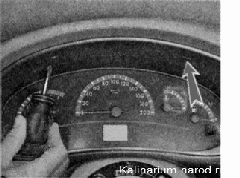
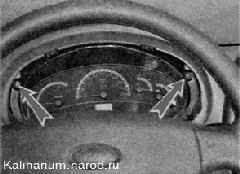
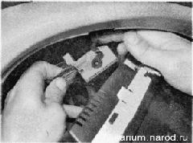

Щиток приборов снятие, замена ламп и установка
Снятие
1. Подготавливаем автомобиль к выполнению работы и отсоединяем клемму провода от отрицательного вывода аккумуляторной батареи.
2. Освободив рычаг регулировки положения рулевой колонки, смешаем максимально вниз рулевое колесо.
3. Короткой крестовой отверткой отворачиваем два самореза крепления облицовки щитка приборов.

4. Преодолевая сопротивление двух пружинных фиксаторов (они надеты на нижние выступы облицовки), вынимаем облицовку из проема панели приборов.-
5. Крестовой отверткой отворачиваем два винта крепления щитка приборов. 
6. Извлекаем щиток из панели приборов и, освободив фиксатор, отсоединяем колодку жгута проводов от щитка.
7. Снимаем щиток приборов
Замена ламп
1. Для замены ламп подсветки приборов плоскогубцами поворачиваем выступающую часть патрона неисправной лампы против часовой стрелки и вынимаем его вместе с лампой из щитка приборов.
2. Для замены лампы подсветки дисплея поворачиваем патрон лампы торцовым ключом на 8 мм.

3. Устанавливаем патрон с новой лампой в щиток приборов и поворачиваем по часовой стрелке до фиксации.
Установка
Устанавливаем щиток приборов в последовательности, обратной снятию.